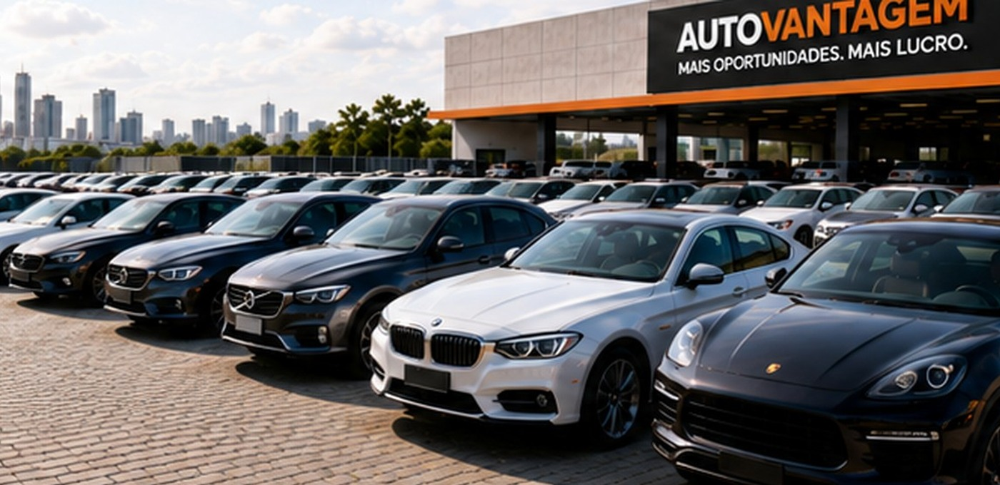
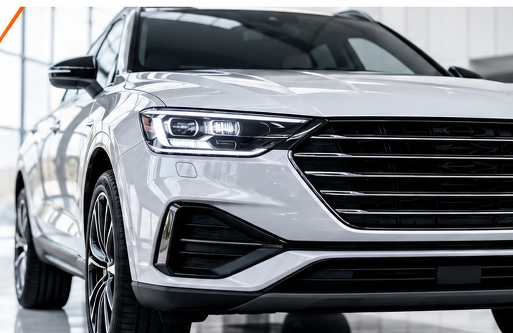

Compre abaixo da tabela com informação e segurança.
Acesso a oportunidades selecionadas por meio de uma rede profissional. O foco é identificar veículos com preço competitivo, informações relevantes e potencial real de margem.
Quero receber oportunidades
Informações para decisões mais inteligentes.
O objetivo não é apenas mostrar um carro. É organizar a oportunidade para que você consiga avaliar preço, estado, histórico e risco antes de negociar.

Como funciona para comprar
Quer comprar abaixo da tabela?
Fale com a equipe e diga qual veículo procura.
Dúvidas frequentes
A AutoVantagem vende o carro diretamente?
A AutoVantagem atua como plataforma de intermediação, aproximando as partes e apoiando o processo comercial.
Todo veículo está abaixo da FIPE?
Não. A rede busca oportunidades com preço competitivo e potencial de margem, mas cada veículo possui condição e negociação próprias.
Os veículos têm garantia?
A condição de garantia depende do veículo e da parte vendedora. A AutoVantagem apresenta as informações disponíveis para apoiar a decisão.